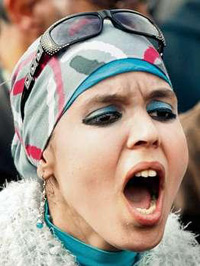

|
|

زنان تظاهر کننده مصری سربازان را به رقص دعوت می کنند
سه شنبه19 بهمن 1389
شهرزادنیوز: به گزراش یک خبرنگار آلمانی، زنان مصر اگرچه دوش به دوش مردان در خیزش مردم این کشور در راهپیمایی ها و تظاهرات شرکت می کنند، اما انگیزه های دیگری برای شرکت در انقلاب دارند. از دختران دانشجو تا زنانی که روی صندلی چرخدار در حرکتند. برخی از آن ها روبنده دارند و گروهی دیگر عینک آفتابی بر موی سر.
دختر دانشجوی 23 ساله ای به نام ماها آمر در این باره می گوید: جهان عرب از این مسأله در رنج است که از توان زنان خود بهره نمی گیرد. ما نسبت به بقیه جهان تنها نیمی از توان خود را به کار می گیریم، چرا که نیمه دیگر انکار و مورد ستم قرار می گیرد.
مای، دختر 29 ساله، می گوید: ما زنان راه درازی را طی کرده ایم، اما هنوز به مقصد نرسیده ایم. ما حقوقی داریم، اما تنها روی کاغذ.
دکتر ایناس 45 ساله می گوید که نمی خواهد دخترش مورد مزاحمت پلیس قرار گیرد. می خواهد که دخترش حق ارتقا و آینده ای در مصر داشته باشد.
در میدان تحریر قاهره زنانی هستند که سربازان را به رقص دعوت می نمایند یا شاخه گلی به آن ها هدیه می کنند و رژیم حسنی مبارک درست از همین تصاویر است که بر خود می لرزد.
زن جوانی درباره تهاجم لباس شخصی های پلیس می گوید که آن ها هرجا که بتوانند، آزارشان می دهند. می خواهند زنان را بترسانند و آن ها را همانگونه به باد کتک می گیرند که مردان را. اما آن ها همچنان ایستاده اند.